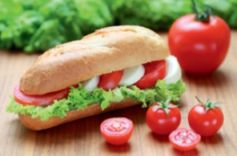
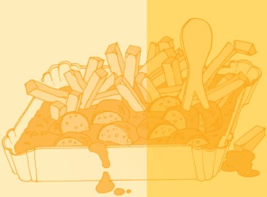

 |
Baguette Tomate/Mozzarella
200 g
420 kcal/1800 kJ:
19 g Eiweiß
16,5 g Fett
48,1 g Kohlenhydrate |
|
Baguette Salat/Salami
200 g
508 kcal/2126 kJ:
20,9 g Eiweiß
21,8 g Fett
56,6 g Kohlenhydrate |
|
Obst, Gemüse, Nüsse, Vollkornriegel, Säfte und Wasser |
 |
Currywurst mit Pommes
sollte eine Ausnahme bleiben!
400 g
1.132 kcal/4.735 kJ:
25 g Eiweiß
83 g Fett
72 g Kohlenhydrate.
1 Liter Cola enthält 106 g
Zucker und 420 kcal |